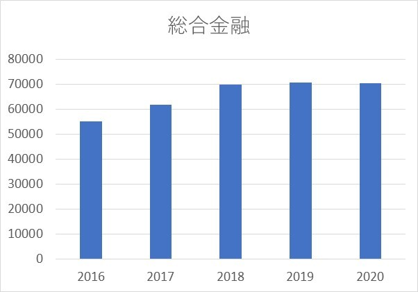
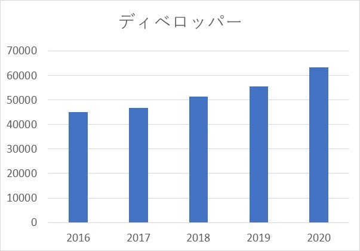

イオン企業分析 其の9
2020/5/22
イオンの企業分析を行っていきます。（9ページ目）
今回は、総合金融事業とディベロッパー事業について見ていきます。
目次
- 1 総合金融事業
- 2 ディベロッパー事業
総合金融事業
この事業は、主にイオンのクレジットカードやイオン銀行が該当します。 私は飲食店でバイトをしていたことがあり、その中でレジ打ちも担当していたのですが、 イオンのクレジットカードはよく見かけるなと思います。
イオンをよく利用する人にとっては、お得になったりするみたいです。
そんなイオンの総合金融事業の営業利益はどうなのだろうか？（下図）
他の事業と比べてもわかりますが、営業利益は全事業でトップとなっています。（詳しくは、こちら） グラフを見てみると、近年で成長してきている事業だということがうかがえるかと。 しかし、2018年ごろからは停滞しているため、契約者の増加に頭打ちが見えてきているのかもしれませんね。
事業報告書によると、2020年、国内では、新規カード会員増加のためにキャンペーンを積極的に実施したり、 イオン銀行での資産運用シミュレーションツールの導入したりするなど、 まだまだ契約者を増やす努力をしていることが分かります。
また、海外では、中高所得者向けにクレジットカードの利便性を高めているそうです。 実際に、2020年現在のクレジットカード会員数は4482万人ですが、そのうちの1601万人は海外会員のため、 実に3分の1ほどを占めていることがわかります。
以上のように、既に総合金融事業は、イオンの大事な利益源ですが、さらなる事業の成長も見込めることがわかります。 しかし、この手の事業は一度信用を失ったら終わりなので、慎重に事業の拡大を行ってほしいと思います。 また、銀行業での預金をどのように運用するのかもこの事業にとってのカギとなるのではないかと思います。
ディベロッパー事業
ディベロッパー事業では、ショッピングセンターの開発・賃貸を行っていますが、 イオンのショッピングモールは非常に巨大なものが多いため、開発費もその分かかっているでしょうが、 賃貸（いわゆる専門店の出店場所の提供）でそれ以上の利益を出しているのではないかと。
イオンはこの事業があるからこそ、イオンショッピングモールに行けば、 何でもそろっているという認識を消費者に印象付けることができているといえますね。
また、この事業は、他の様々な事業と連携されているため（GMS事業、総合金融事業など）、 イオンの事業展開には、感心します。
さて、そんなディベロッパー事業の営業利益はどうなのだろうか？（下図）
さて、見てのとおり年々営業利益は上昇していることがわかると思います。 この5年では、150億円ほど利益を伸ばしているため、イオンにとっては大事な利益源であるといえます。
事業成果報告書では、積極的な増床やリニューアルを行うと同時に、ハピネスモール と呼ばれる取り組みを行っている。これは、顧客の健やかな暮らしや心の豊かさをサポートするという目的が掲げられており、 新たな顧客層の取り組みに貢献しているそうです。
この事業は、先行投資を大規模に行わなければなりませんが（大型ショッピングモールなど）、 イオンのブランド力がある限り、出店したい店舗は多くあるため、長期的に利益を得ることができると考えられるため、 海外進出を積極的に行っている今、さらにイオンへの貢献度が大きくなる事業だと考えられます。
次ページでは、サービス・専門店事業、国際事業、その他の事業についてみていきます。